|
|
|  |
  |
|
What is Researchers' Night?
The Researchers' Night is an event bringing together the public at large and researchers. It occurs annually on the fourth Friday of September all over Europe. Its main objective is to reveal scientists and science in a relaxed and friendly atmosphere.
The Researchers' Night offers the opportunity to discover research facilities that are usually not open to public (laboratories, research centres, museum collections, ...), use the most recent technologies and instruments with the guidance of scientists, participate in experiments, competitions and quizzes, watch demonstrations and simulations, exchange ideas and party with the researchers.
One of the main messages of Researchers' Night is that researchers are "ordinary people with an extraordinary job". Beyond their fascinating profession they are sportsmen, musicians, painters, singers, comedians, and they are ready to share their talent with the public.
Is it of any interest to me?
The target audience of the event is the public at large, regardless of age and scientific background. It addresses all curious minds from enthusiasts to science-reluctant and offers a variety of fascinating activities for all.
The mix of discovery and leisure activities (art, literature, music, gastronomy, sport) makes the success of the Researchers' Night, which offers an original alternative to more traditional Friday night activities.
Did I miss a Researchers' Night already?
The Researchers' Night was born in 2005 as part of "Researchers in Europe" initiative, resulting form the Communication of the European Commission to the Council and European Parliament "Researchers in the European Research Area: one profession, multiple careers" (COM(2003)436).
The initiative implemented the Commission's recommendation to "launch a European Year of researchers to strengthen the public recognition of careers in research & development". It aimed at enhancing public recognition of researchers, while stimulating more young people to embark on scientific careers and contributing to the improvement of the researchers' working environment.
Since 2006, Researchers' Night exists as a self standing action under the Marie Curie Actions and has encountered an increasing success. Last year it was celebrated in more than 600 venues in 250 cities of 33 European countries. WThis year's total indicative budget for organising the night is €4 million.
Take a look at the activities of previous Researchers' Night editions.
I want to organise Researchers' Night
Researchers' Nights result from yearly calls for proposals. The proposals correspond to the list of activities detailed in the Work Programme.
The 2012 call will be launched at the end of September. Take a look at the 2011 call. |
|
|